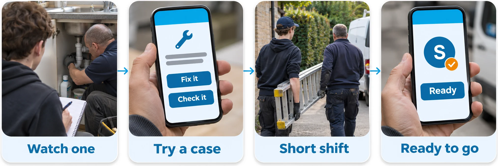
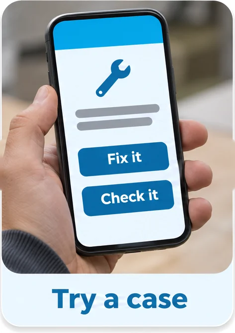
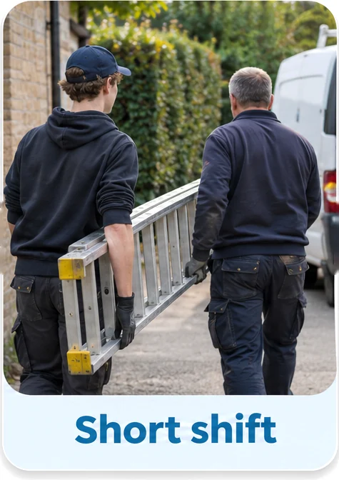

Meet an Apprentice
TeamHarder, but possible

- 1

A student watches a plumber work under a sink.
- 2

The candidate tries a short real case from my work.
- 3

A paid short shift follows, with me supervising.
- 4
The candidate gets a Ready badge.
Problem
I want to train someone but cannot spare days to find out if they are right.
What you gain
I train only people who already passed a short real test.
Brings the next customer
Local schools send prepared people, so the next hire comes to me ready.
Why build it
Hiring takes time providers do not have, and this tests a person in a short step.
Who has it
Solo trade owners and students from local programs.
Also inside
- Short shadow day
- Trial with real cases
- Learn from common mistakes
- Schools send prepared people